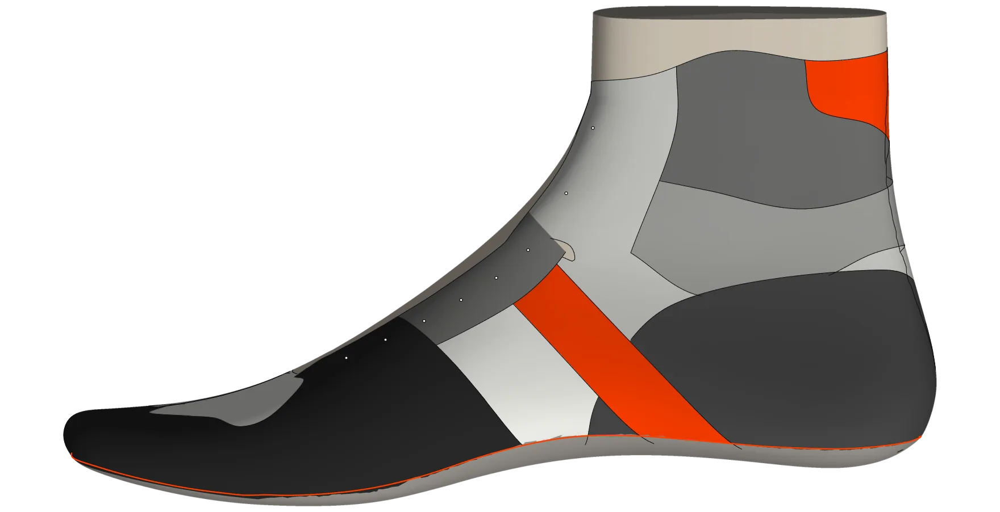
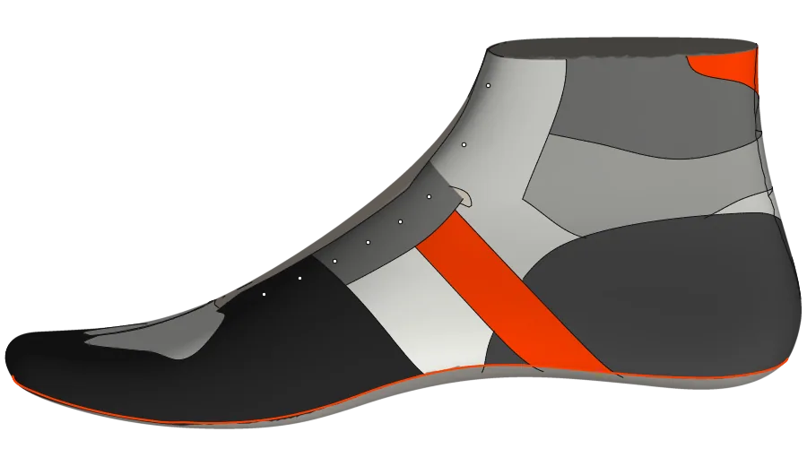

Pattern engineering case study
Basketball boot BB-01 / Double standard / Eleven parts at size
A panther is all spring and sudden turns, which is what a high-top has to survive. PANTERA is a basketball boot pattern engineered on the TIGRE GARRA TS-27 last: the last taped in code, the standard drafted by the book, every part cut at size, then wrapped back onto the last to prove it fits.

The brief / The work / The proof
Take a pattern engineer's hand method, Frank Jones's basketball boot standard, and run it end to end in code on a 3D last, without losing a single rule of the craft.
Digital taping of the GARRA TS-27 last, a double standard in 17 steps, 11 parts cut at size with 2 mm radii, a reworked V2 last for a basketball forefoot, and the pattern wrapped back onto the last in 3D.
All 19 of the book's measurements within tolerance. Pattern girth within 0.4 % of the last on V2. Every part delivered as a tech pack, Rhino 9 and DXF files, and a printable paper test kit.
Hiring for design technology, pattern engineering or technical documentation? This is how I work.
LinkedIn →← PortfolioThe files ↓Hand method / Computational tools / Same rules
Can a pattern engineer's hand method run end to end in code, and still produce a pattern a factory could cut?
The method is Frank Jones's basketball boot standard from Pattern Cutting: mean forme on the inside forme, a bisected crease line, the toe sprung down, then the style lines by the numbers.
By hand, a pattern starts with masking tape on a last. The tape is peeled off, flattened into a forme, and everything else is drawn on paper. Here the last is a 3D model, the TIGRE GARRA TS-27, so every one of those steps became geometry: the taping is a flattening, the standard is a script, and the parts are cut from it by boolean operations.
The payoff is the last step. Because every point on the flat pattern still knows where it came from on the last, the whole standard can be wrapped back onto the last in 3D. That turns "does it fit?" from a feeling into a measurement.
GARRA TS-27 last, UK 8 / US 9 sample size · Rhino 9 files + Python · a study, not a production pattern.
Split the last / Unfold each half / Spring the outside onto the inside
The last is cut on its centre line, from the back of the heel to the toe point. The bottom and the flat top are dropped, which leaves exactly what tape would cover.
Each half is unfolded with an as-rigid-as-possible flattening: the shape that stretches the surface least, the way tape behaves when it is peeled flat.
Sports shoes take their spring from the inside forme, so the outside forme is laid on it at the back and cone, then its toe is sprung down 2.3° to follow.
Seventeen steps / Why each one matters / Then try it yourself
Why it matters
Cut lines / Folds / Notches / Eyelets / Open any part
Fold parts are opened: the outside half in red, the inside half mirrored in blue. Every cut line carries 2 mm radii, inside and outside corners alike.
Every line wrapped onto the last / Drag to turn it
Each point of the standard is found inside the flattened forme and carried back to 3D with the same triangle weights, outside lines onto the outside, inside lines onto the inside.
The last is then painted by part: mudguard and counter dark, quarter and vamp pale, side flash and back facing red. Misplaced lines show up immediately as a seam in the wrong place.
On GARRA TS-27 V1 the collar rose above the last, which ended at 137.6 mm. V2 runs to 162 mm, so the whole leg is now on real surface. Switch V1 / V2 to compare.

Drag or use the arrow keysLeg to the collar + 10 / A basketball forefoot / Same pattern rules
A pattern can only be as good as its last. The last is the TIGRE GARRA TS-27, a Tigre Studio basketball last (garra is Spanish for claw). V1 proved the method; V2 fixes the two things V1 could not prove or did not give a player.
Everything behind the joint, the heel, seat, waist and instep, stays exactly as on V1, so the heel grip and the fit that already worked are kept.
Then the whole pattern was run again from the new last: re-taped, re-drafted, re-cut, re-wrapped and re-checked. Use the V1 / V2 switch in the header to compare every section of the page.
| Station | % length | V1 | V2 | Change | % | Scale 0–6 mm |
|---|---|---|---|---|---|---|
The book's numbers, measured back / Girths, last against pattern
| Step | Measurement | Spec | Drawn | Δ | Tol ± | Status | |
|---|---|---|---|---|---|---|---|
The flat pattern holds the last's real girth at every station. The bar shows the difference at ±1 % full scale.
Drawing rules / Cutting rules / Printing rules
Once the pattern fitted, a line-by-line scan of every drawing found lines that floated, steps on the cut edge and seams in the wrong place. The geometry was right; the drawing was not. These rules fixed it, and none of them changed a single number in the fit.
Print it / Cut it / Tape it to a last
Print at 100 % / actual size and measure the 50 mm square before cutting anything. DXF and Rhino 9 files of every part are available on request.
Print, cut and tape the pattern onto the last before any leather is cut. How-to, scale check, every part at 1:1, fit checklist and photo log.
Bill of parts, the double standard and all eleven parts at 1:1 with cut lines, folds, notches, eyelets and the spec check.
The study in five sheets: the pattern on the last, the formes, the double standard, the parts and the checks.
The standard and the parts plotted at full size on A3, ready to trace or cut in card.
Print, cut and tape the pattern onto the last before any leather is cut. How-to, scale check, every part at 1:1, fit checklist and photo log.
Bill of parts, the double standard and all eleven parts at 1:1 with cut lines, folds, notches, eyelets and the spec check.
The study in five sheets: the pattern on the last, the formes, the double standard, the parts and the checks.
The standard and the parts plotted at full size on A3, ready to trace or cut in card.
Paper test / Linings / Grading